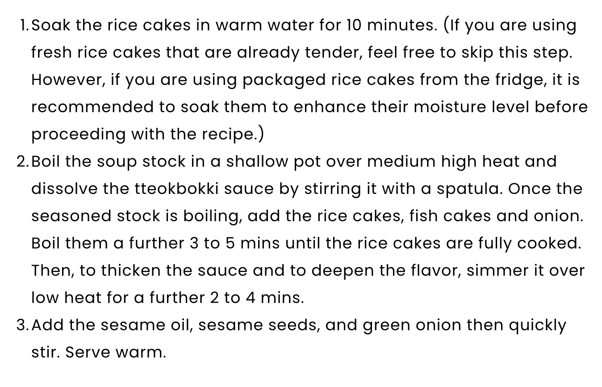
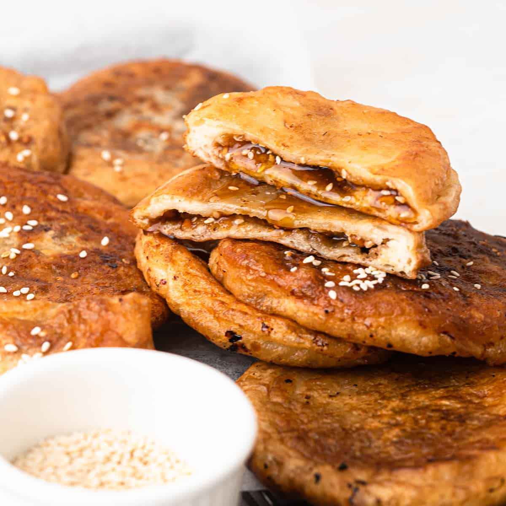
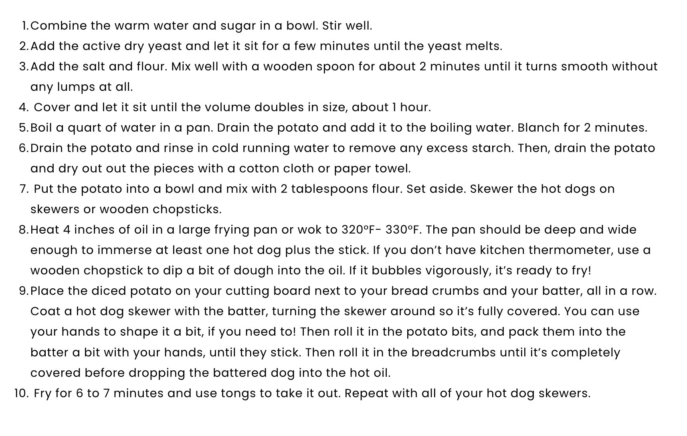
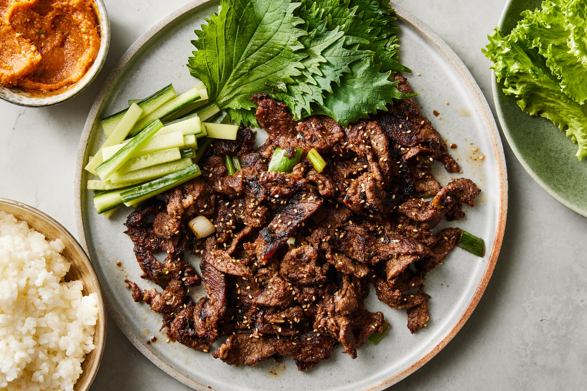
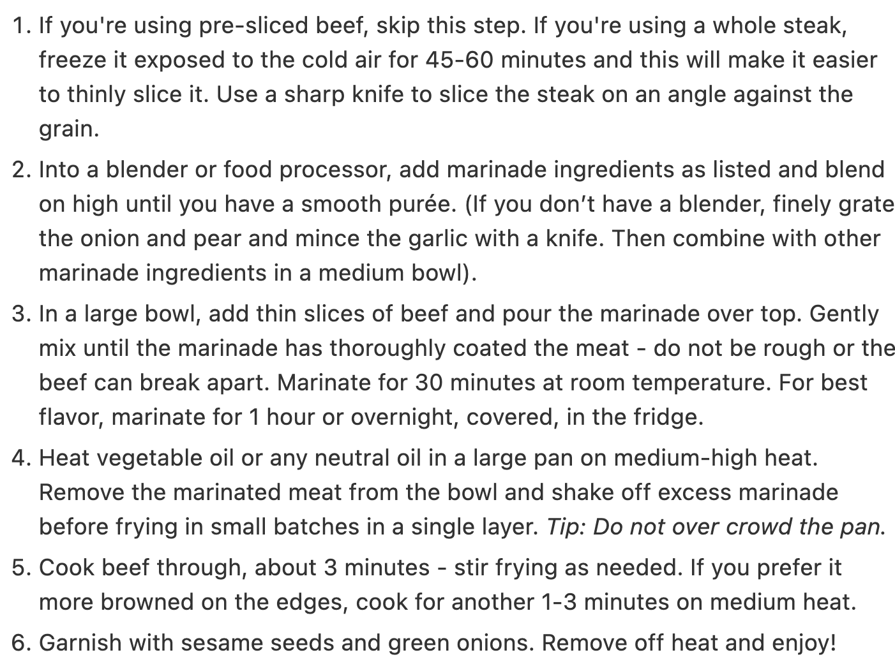
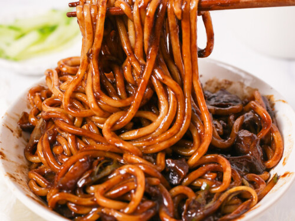
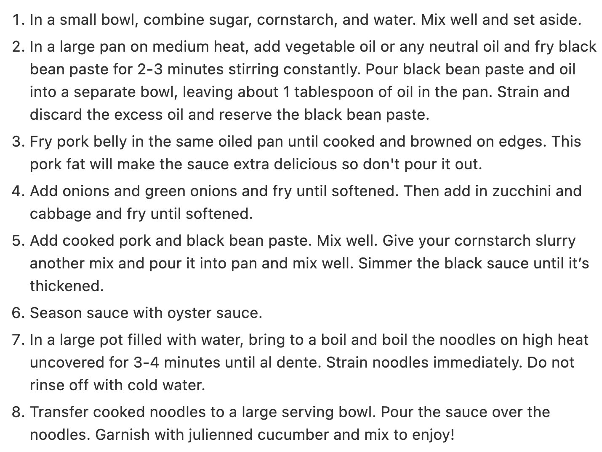
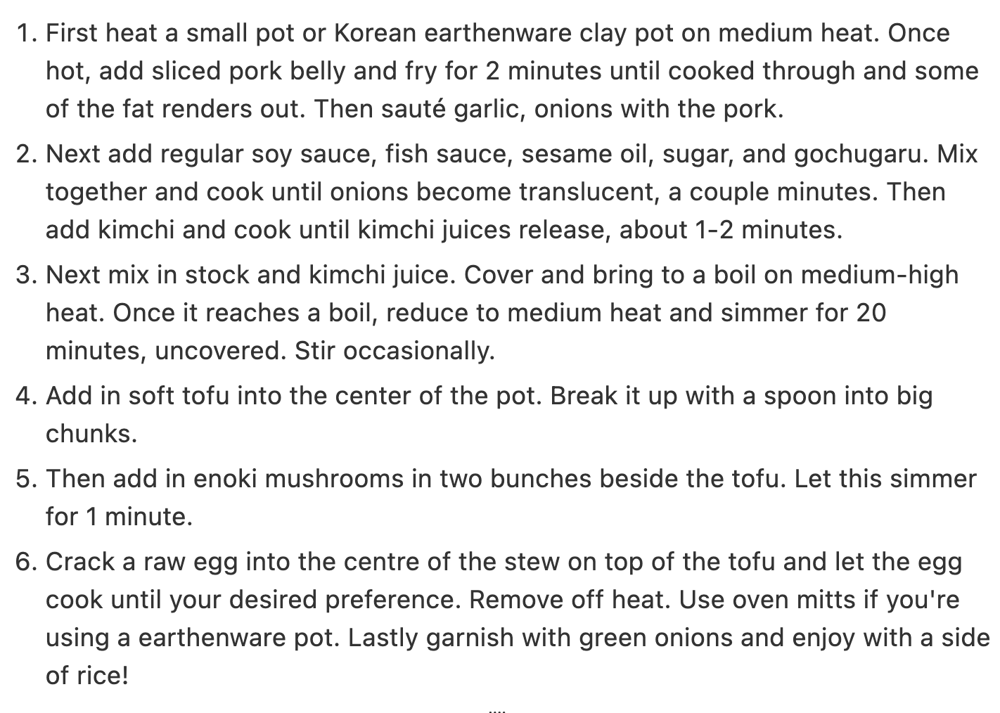

Spicy, savory, and worth the try? Yes!
Yummy streetfood recipes you can also make at home!
| Tteokbokki | Ingredients | Recipe |
|---|---|---|
| 350g / 12 ounces Korean rice cakes, separated 150g / 5.3 ounces Korean fish cakes, rinsed over hot water & cut into bite size pieces 2 cups Korean soup stock (dried kelp and dried anchovy stock), use this recipe 60g / 2 ounces onion, thinly sliced, for sauce: 3 Tbsp gochujang (Korean chili paste), 1 1/2 Tbsp raw sugar, 1 Tbsp soy sauce, 1 tsp minced garlic, 1 tsp gochugaru (Korean chili flakes) |  |
| Hotteok | Ingredients | Recipe |
|---|---|---|
|  | Water, 2 tbs white sugar, 2 ts dry yeast, 1/2 ts kosher salt, 1 tbs vegetable oil, 2 cups and 1/2 cup of all purpose flour, 1/2 cup turbinado sugar (or brown sugar), 1 ts cinnamon powder, 2 tbs chopped walnuts |
| Korean Corndog | Ingredients | Recipe |
|---|---|---|
| Batter, Panko, Hotdog, Cheese, Potato, Condiments |  |
Traditional savory Korean dishes to make at home!
| Beef Bulgogi | Ingredients | Recipe |
|---|---|---|
|  | Pre-sliced Rib Eye Beef, Neutral oil, Green onions, Sesame seeds, Asian Pear (aka Korean Pear), Onion, Garlic, Soy sauce, Brown sugar, Mirin, Sesame oil, Honey, Black pepper |  |
| Jajangmyeon | Ingredients | Recipe |
|---|---|---|
|  | 1.20 lbs thick wheat noodles, 0.65 lbs pork belly chopped into smaller pieces, 1 small onion finely chopped, 1 cup green cabbage chopped, 1 cup zucchini diced, 2 green onion finely chopped, 1/3 cup Korean roasted black bean paste aka Chunjang, 3 tablespoon vegetable oil any neutral oil, 1 tablespoon oyster sauce or sub with vegetarian stir fry sauce |  |
| Sundubu Jjigae | Ingredients | Recipe |
|---|---|---|
|
1.5 cup anchovy stock or low-sodium chicken stock or dashi stock, 11 oz silken tofu aka soft tofu, 1/2 cup pork belly strips sliced into 1 cm wide pieces, 1/2 cup kimchi, 1/2 cup enoki mushrooms ends trimmed, washed and strained, 1/4 cup onion finely diced, 2 garlic cloves minced, 1 egg, 2 tablespoon kimchi juice, 2 teaspoon regular soy sauce, 2 teaspoon fish sauce, 2 teaspoon sesame oil, 1 teaspoon white granulated sugar, 1/2 teaspoon gochugaru, 1 green onion finely chopped for garnishing |  |